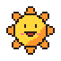

捨てられた宇宙船をレーザーで一層ずつはがして、中に残ったものを拾ってくるコージーな解体ゲーム。
体験版 2026年12月 · 早期アクセス 2027年1〜3月

ロマンを求めて。
捨てられた宇宙船をレーザーで一層ずつはがして、中に残ったものを拾ってくるコージーな解体ゲーム。
体験版 2026年12月 · 早期アクセス 2027年1〜3月


NangmanGames
NangmanGamesは、韓国でひとりでゲームを作っているスタジオです。長いあいだ頭の中に妄想ばかりためこんで、何ひとつ仕上げられない「アイデアマン」でしたが、最近はその妄想をひとつずつ取り出して、実際に組み立てています。
Dock 7は、そうして組み立てたものが集まった場所です。月をめぐるステーション、誰も迎えに来なかった船、夜につけっぱなしのラジオ、そして誰かが置いていった物たち。
ナンマン(낭만)は、あたたかくて少しせつない「ロマン」を表す韓国語です。